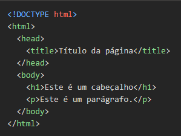
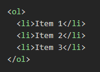
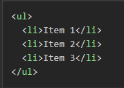

INSTRUÇÕES:Neste índice você deve colocar os tópicos que mais entendeu. Estes apenas são sugestões.
A história da computação é fascinante e remonta a muitos séculos atrás. A palavra “computador” vem do verbo “computar”, que significa “calcular”. A relação de contar já intrigava os homens desde a antiguidade. O primeiro dispositivo mecânico de computação foi o “ábaco”, uma calculadora chinesa que realizava operações algébricas. No século XVII, o matemático escocês John Napier foi um dos responsáveis pela invenção da “régua de cálculo”, o primeiro instrumento analógico de contagem capaz de efetuar cálculos logaritmos. A primeira máquina de calcular automática foi inventada pelo matemático francês Pascal em 1640. A máquina foi sendo aperfeiçoada nas décadas seguintes até chegar no conceito que conhecemos hoje. A primeira máquina mecânica programável foi introduzida pelo matemático francês Joseph-Marie Jacquard. Tratava-se de um tipo de tear capaz de controlar a confecção dos tecidos através de cartões perfurados. Já no século XIX, o matemático inglês Charles Babbage criou uma máquina analítica que, a grosso modo, é comparada com o computador atual com memória e programas. Assim, as máquinas de computar foram cada vez mais incluindo a variedade de cálculos matemáticos (adição, subtração, divisão, multiplicação, raiz quadrada, logaritmos, etc). Hoje em dia, os computadores são aparelhos eletrônicos que recebem, armazenam e produzem informações de maneira automática.
CLIENTS é um termo empregado em computação e representa uma entidade que consome os serviços de uma outra entidade servidora, em geral através do uso de uma rede de computadores numa arquitetura cliete-servido Existem dois tipos principais de clientes: cliente gordo e cliente magro. O cliente gordo é um computador numa rede cliente-servidor que dispõe de recursos suficientes para realizar boa parte das tarefas de modo independente de um servidor. Já o cliente magro é um computador numa rede cliente-servidor que é totalmente dependente de um servidor para realizar suas atividades
Servers é um equipamento que processa e armazena dados, capaz de executar um conjunto específico de programas ou protocolos para fornecer serviços para outras máquinas ou clientes. Esses sistemas podem ser físicos ou virtuais, estarem instalados local ou remotamente. Normalmente, são escaláveis e possuem alto poder de processamento. O termo servidor também define um recurso dentro de um sistema computacional maior, capaz de processar aplicações, prestar serviços e armazenar dados dentro de uma rede LAN ou WAN.
INSTRUÇÕES: a estrutura básica de um documento HTML é composta por duas partes principais: o cabeçalho e o corpo. O cabeçalho é definido pela tag <head> e contém informações sobre o documento, como o título da página, links para arquivos CSS e JavaScript, e outras informações importantes. O corpo é definido pela tag <body> e contém o conteúdo real da página, como texto, imagens, vídeos e outros elementos.
Aqui está um exemplo de estrutura básica de um documento HTML:
VOLTARListas Ordenadas: São listas que apresentam seus itens em uma sequência numérica. Utilizam a tag <ol> para definir a lista e a tag <li> para cada item.
Exemplo:
Uma lista não ordenad: é uma lista que apresenta itens sem uma ordem específica. Ela é criada usando a tag <ul> e cada item é definido com a tag <li>. Ao contrário das listas ordenadas, as listas não ordenadas não usam números para indicar a ordem dos itens. Em vez disso, elas usam marcadores, como círculos ou quadrados, para indicar cada item da lista.s
Exemplo:
VOLTARENTENDENDO O ASSUNTO